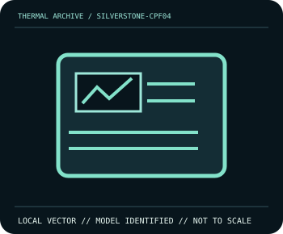

[ INDIVIDUAL COMPONENT // COOLING ]
SilverStone CPF04 PWM Fan Hub
Eight fan outputs, SATA power, one PWM input and one tach return.

IDENTIFICATION: Match complete model, suffix, revision and bundle before installation. Related variants can differ in dimensions, brackets, wiring, connector, and operating limits.
Manufacturer specifications
| Catalog subcategory | Cooling Controllers |
|---|---|
| Exact model | SilverStone CPF04 PWM Fan Hub |
| Published specifications | Eight fan outputs, SATA power, one PWM input and one tach return. |
| Compatibility and mounting | PWM splitter/hub, not independent channels. Verify standard PC fan pinout. |
| Connector and electrical limitations | 3 A maximum total for connected fans; no per-port value inferred. |
Safe installation and maintenance
Disconnect PSU/SATA power before rewiring. Sum connected fan loads and check connector orientation; secure probes and cables away from moving fans.
- Follow the exact manufacturer manual for this model and host; do not interchange similar-looking parts or hardware.
- After service, verify pump/fan operation and temperature behavior under monitored conditions before normal workload.
Manufacturer source
- www.silverstonetek.com — SilverStone CPF04 PWM Fan Hub product informationManufacturer specifications; verify current revision-specific manual and compatibility details before installation.
This static catalog entry is an identification aid, not a compatibility guarantee; ratings can vary by revision or SKU.